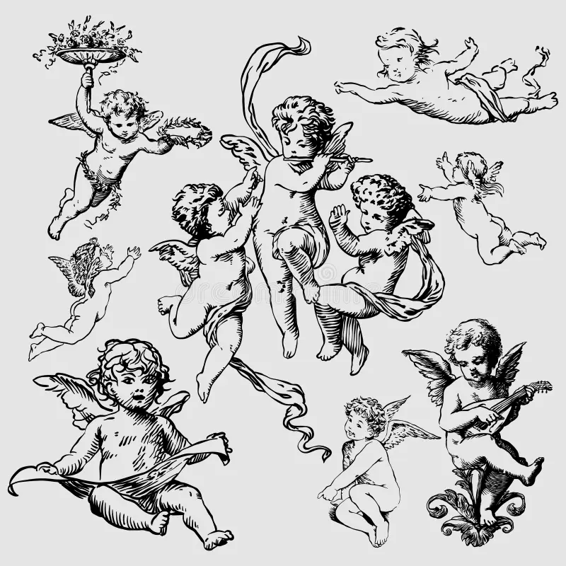

Visione
La visione dell’Angelologia secondo Igor Sibaldi è molto diversa da quella tradizionale religiosa.
Per Sibaldi, angeli = forze interiori, possibilità della mente e livelli più profondi della coscienza umana.
Gli angeli aiutano l’uomo a superare paure, limiti e abitudini mentali che impediscono la crescita personale.
Ogni angelo possiede qualità specifiche, come il coraggio, la creatività, l’intelligenza o la capacità di cambiare vita.
Secondo questa visione, entrare in contatto con gli angeli significa conoscere meglio sé stessi e sviluppare i propri talenti nascosti.
Sibaldi collega l’Angelologia anche allo studio delle antiche tradizioni ebraiche e della mistica.
Gli angeli diventano quindi simboli di evoluzione spirituale e trasformazione interiore.
L’obiettivo non è soltanto pregare, ma imparare a pensare in modo più libero e consapevole.
Per questo motivo, l’Angelologia di Igor Sibaldi viene vista come un percorso di ricerca personale e spirituale.
Per approfondire il concetto di licenze aperte sul web, vedi anche la pagina della organizzazione Creative Commons (link esterno).
energia
interiorità
crescita
trasformazione
conoscenza
talento
libertà
mente
simboli
intuizione
evoluzione
identità
coscienza
cambiamento
